인구 현상과 인문사회 콘텐츠 2
인구 구조, 인구 동태, 인구 이동
인구 구조, 인구 동태, 인구 이동
인구 구조
속성에 의거한 인구 구성
인구 구조의 종류
생물학적 인구 구조
- 성별ᆞ연령별 인구 구조
- 혈액형, MBTI의 인구 구조 등
사회ᆞ경제ᆞ문화적 인구 구조
- 산업 및 직업, 계층, 교육수준, 종교, 취향 등
인구 구조의 측정 및 시각화
성별 구조
- 성비: 전체 성비, 출생성비, 연령별 성비
연령별 구조
중위연령
연령(층) 비중: 유소년층(0-14), 청장년층(15-64), 노년층(65세 이상)
인구 피라미드
- 성별ᆞ연령별 인구 구조의 시각화 기법
인구 고령화
- 노인 인구 비중, 노령화 지수
부양 인구비: 인구 구조에 대한 경제적 해석
- 총부양인구비/유소년부양인구비/노년부양인구비
세계: 성비, Region

세계: 성비, Subregion

세계: 성비, 국가

세계: 성비, 국가

세계: 성비, 주요 국가
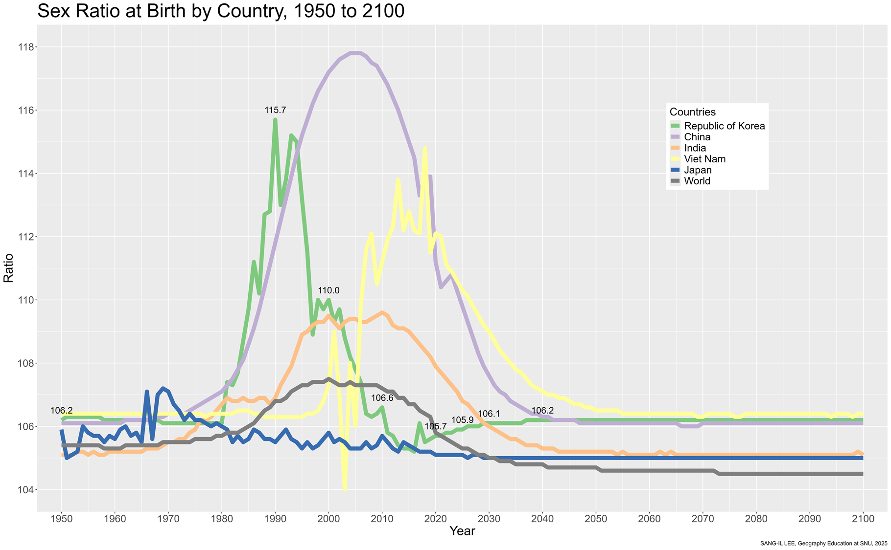
세계: 중위연령, Region

세계: 중위연령, Subregion

세계: 연령 구조, Region

세계: 연령 구조, 국가

세계: 연령 구조, 국가

세계: 연령 구조, 국가

우리나라: 성비, 시군구

우리나라: 중위연령, 시군구

우리나라: 연령 구조

우리나라: 인구 피라미드


우리나라: 인구 피라미드

우리나라: 부양인구비

우리나라: 학령인구감소

우리나라: 1인가구 비중 증가

우리나라: 1인가구 비중 증가

인구 웹 앱 예시
인구 동태
출생과 사망
출산력의 측정: CBR
조출생률(crude birth rate)
인구 1,000명 당 출생아 수
\(CBR=\frac{B}{P}\times1,000\)
\(B\): 출생아 수
\(P\): 연앙인구
장점
자료 획득이 용이, 계산이 편리
출생이 인구 증가에 기여한 정도 파악 용이
단점: 실질적인 출산력 측정에 한계, 인구 간 출산력 비교의 어려움
- 인구 구조(가임연령층 인구 비중)의 효과 + 혼인율(출산가담률)의 차이
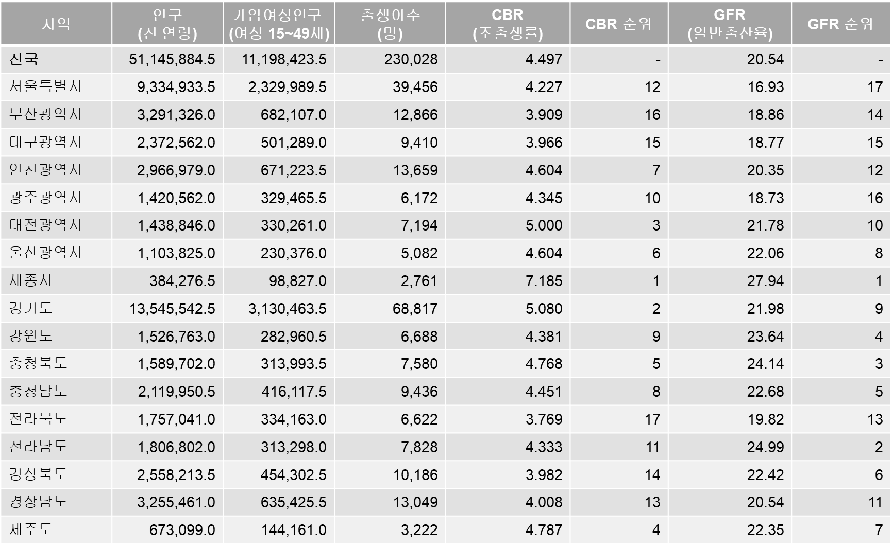
출산력의 측정: TFR
합계출산율(total fertility rate)
현 연령(층)별 출산율이 변화하지 않을 경우, 한 여성이 평생 동안 낳는 평균 자녀 수
\(TFR=A\times\sum_a\frac{B_a}{F_a}\)
\(A\): 연령(층)의 단위 연수(예: 1 혹은 5)
한 여성이 가임연령 기간(보통 15-49세)를 거치면서 각게 되는 각세별 출산 확률의 합산값
장점
가장 합리적, 가장 널리 사용됨
인구대체수준(population replacement level): 인구 규모를 유지하기 위한 최소한의 출산 수준 -> TFR = 2.1
단점: 기간 합계출산율 vs. 코호트 합계출산율
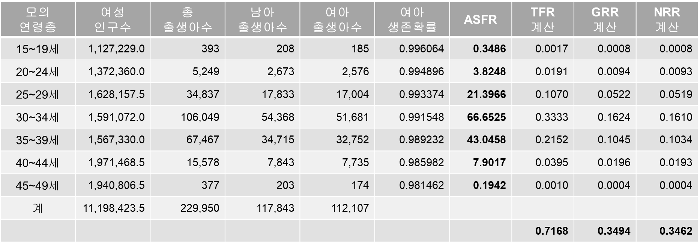
출산: 세계, TFR, Subregion
 by Subregion, 2025.jpg)
출산: 세계, TFR, 국가
, 2025.jpg)
출산: 우리나라, CBR, 전체

출산: 우리나라, CBR vs. TFR, 전체

출산: 우리나라, CBR vs. TFR, 시군구
, 2023.jpg)
, 2023.jpg)
사망력의 측정: CDR
조사망률(crude death rate)
\(CDR=\frac{D}{P}\times1,000\)
\(D\): 사망자 수
\(P\): 연앙인구
장점
자료 획득이 용이, 계산이 간편
사망이 인구 감소에 기여한 정도 파악 용이
단점: 실질적인 사망력 측정에 한계, 인구 간 비교의 어려움
- 인구 구조(노년층 비중)의 효과
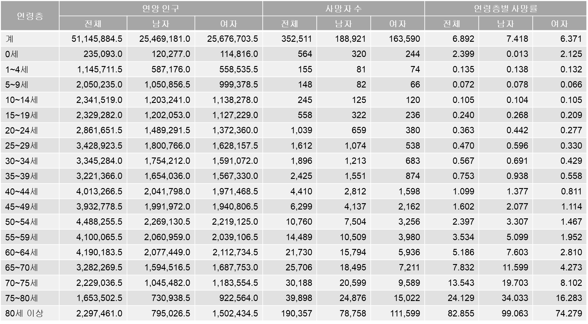
사망력의 측정: SDR
표준화 사망률(standardized death rate)
해당 인구의 연령층별 사망률 데이터가 존재할 경우
표준(준거) 인구의 연령 구조(인구 규모 포함)를 상정했을 때의 조사망률을 계산
\(SDR=\frac{\sum_a(\frac{D_{a,r}}{P_{a,r}})\times P_{a,s}}{P_s}\times 1,000\)
\(D_{a,r}\): 해당 인구 \(r\)의 \(a\) 연령층 사망자 수
\(P_{a,r}\): 해당 인구 \(r\)의 \(a\) 연령층 인구 수
\(P_{a,s}\): 표준(준거) 인구 \(s\)의 \(a\) 연령 인구 수
\(P_s\): 표준(준거) 인구 \(s\)의 전체 인구 수
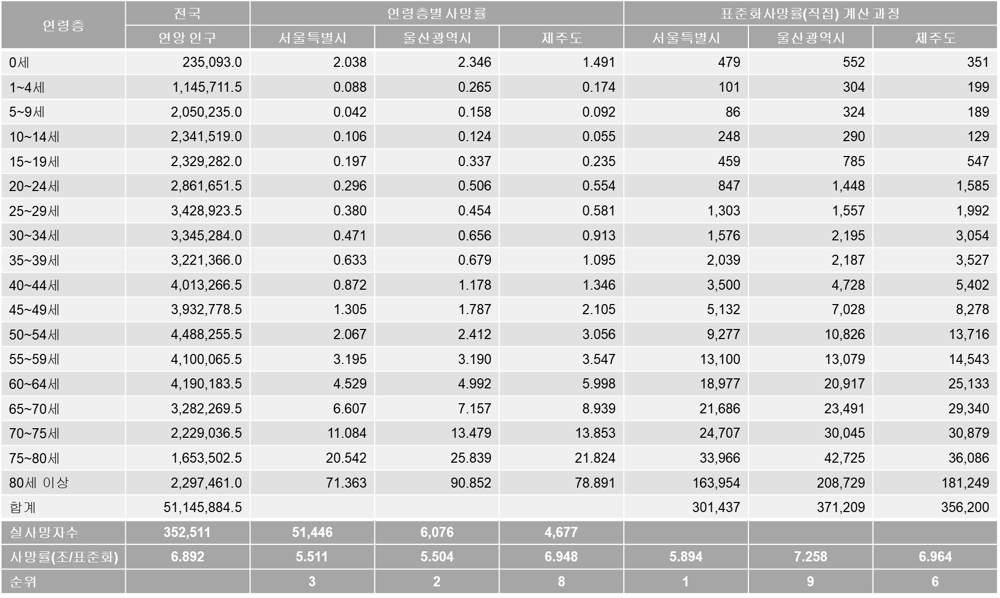
사망: 세계, CDR, Subregion
 by Subregion, 2025.jpg)
사망: 세계, CDR, 국가
, 2025.jpg)
사망: 우리나라, CDR, 전체

사망: 우리나라, CDR vs. SDR, 시군구
, 2023.jpg)
, 2023.jpg)
자연변화: 우리나라, 전체

자연변화: 우리나라, 시군구
, 2023sgg2.jpg)
인구 웹 앱 예시
인구 이동
통상적 거주지 상의 변동
인구 이동 연구의 공간적 프레임워크: 개념
전역 스케일과 지역 스케일의 결정을 포함한 인구 이동 연구의 공간적 세팅
전역 스케일(global scale)
- 인구 이동이 고려되는 폐쇄 시스템의 외연, 공간범위(spatial scope)
지역 스케일(regional scale)
- 전역 스케일을 구성하는 공간개체들, 공간단위(spatial unit)
인구 이동 연구의 공간적 프레임워크: 국제
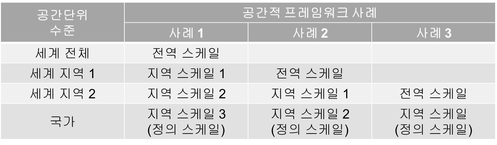
인구 이동 연구의 공간적 프레임워크: 국내
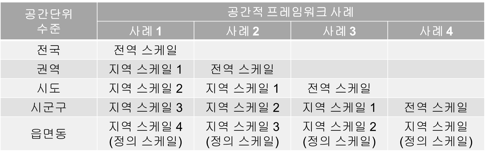
측정: 전역 스케일
총이동 및 총이동률
총이동(gross migration, GR): 특정한 전역 스케일 내에서 발생한 총 이동자 수
연간 국제 인구 이동자 수
연간 국내 인구 이동자 수: 우리나라의 경우 2024년 6,283,319명
총이동률(gross migration rate, GMR): 총이동을 연앙인구로 나누어 백분률로 나타낸 것으로, 이동력(이동 경향성, 이동 확률)의 총체적 지표
\(GMR=\frac{GM}{P}\times 100\)
연간 국제 총이동률
연간 국내 총이동률: 우리나라의 경우 2024년 12.3%
성별ᆞ연령별 이동 및 이동률
\(GMR^s_a=\frac{GM^s_a}{P^s_a}\times 100\)
우리나라: 2024년 20-24세 21.7%, 55-59세 8.5%
측정: 전역 스케일
‘전역 스케일 측도의 지역 스케일 의존성’
특정한 지역 스케일의 공간단위 경계를 가로지르는 인구 이동
총이동(총이동률)(우리나라, 2024년)
읍면동(정의 스케일): 6,283,319명(12.3%)
시군구 스케일: 4,041,782명(7.9%)
시도 스케일: 2,174,527명(4.3%)
시군 스케일: 2,984,000명(5.8%)
측정: 지역 스케일
규모
전입(im-migration, \(IM_i\)): 다른 지역을 떠나 해당 지역으로 이동한 인구 -> 전입자수
전출(out-migration, \(OM_i\)): 해당 지역을 떠나 다른 지역으로 이동한 인구 -> 전출자수
총이동(gross migration, \(GM_i\)): 전입 + 전출 -> \(GM_i=IM_i+OM_i\)
이동의 전체적인 규모
전역적 스케일의 총이동과 다른 개념
순이동(net migration, \(NM_i\)): 전입 - 전출 -> \(NM_i=IM_i-OM_i\)
양수: 전입 초과 혹은 순전입(net in-migration)
음수: 전출 초과 혹은 순전출(net out-migration)
측정: 지역 스케일
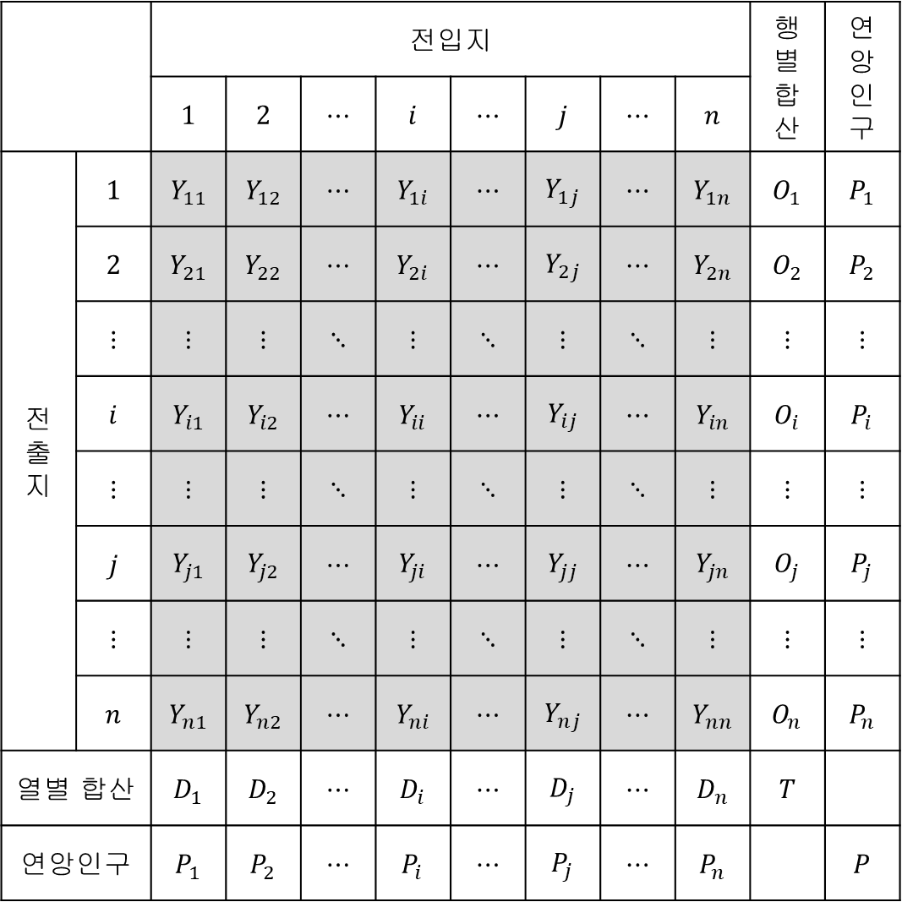
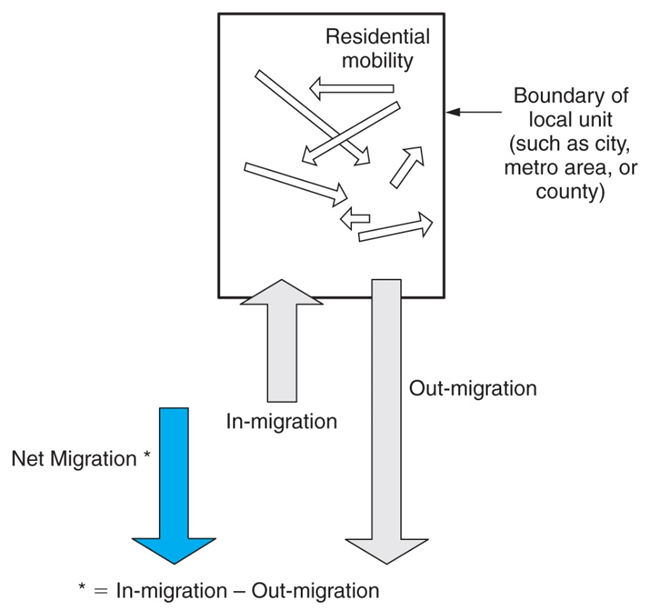
측정: 지역 스케일
비율: 규모를 연앙인구에 대한 백분율(%)로 나타낸 것
전입률(in-migration rate): \(IMR_i=\frac{IM_i}{P}\times 100\)
- 전입이 인구 증가에 기여하는 정도
전출률(out-migration rate): \(OMR_i=\frac{OM_i}{P}\times 100\)
전출이 인구 감소에 기여하는 정도
인구 이동의 확률: 전출 확률
총이동률(gross migration rate): \(GMR_i=\frac{IM_i+OM_i}{P}\times 100\)
순이동률(net migration, rate): \(NMR_i=\frac{IM_i-OM_i}{P}\times 100\)
- 사회 증감이 인구 증감에 기여하는 정도
측정: 지역 스케일
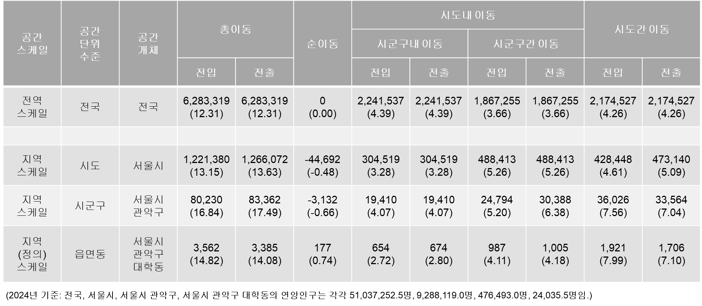
세계: NM, SDG Region

세계: NM, 국가

세계: NMR, 국가
, 2025.jpg)
세계: 국제 인구 이동 스톡 데이터
세계: IMS, 전체
총이동
153,916,063(1990년) -> 174,566,152(2000년) -> 221,020,392(2010) -> 250,042,020(2015) -> 275,284,031(2020) -> 304,021,813(2024)
2024년 현재 304,021,813명의 인구가 자신이 태어나지 않은 나라에 살고 있음.
총이동률(%)
2.9(1990) -> 2.8(2000) -> 3.1(2010) -> 3.3(2015) -> 3.5(2020) -> 3.7(2024)
2024년 현재 전 세계 인구의 3.7%가 자신이 태어나지 않은 나라에 살고 있음
세계: IMS, SDG Region
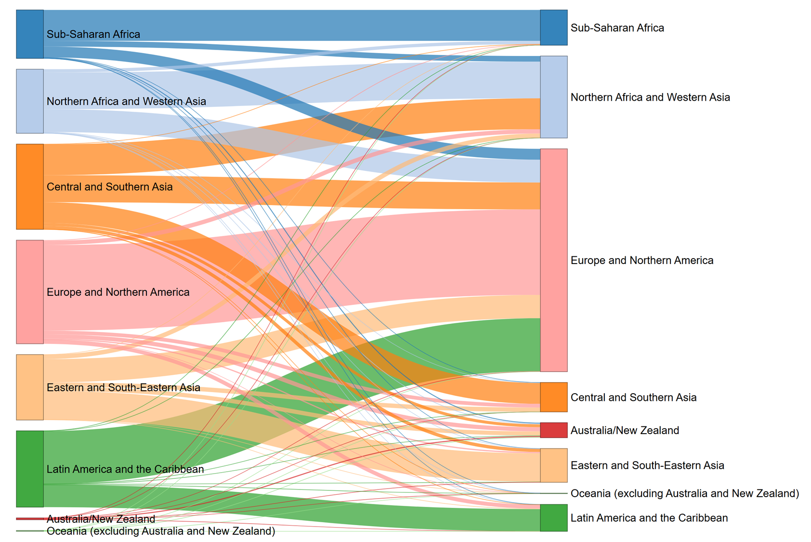
세계: IMS(도착지 기준), 국가

세계: IMS(도착지 기준), 우리나라

세계: IMS(출발지 기준), 국가

세계: IMS(출발지 기준), 우리나라

세계: 외국 태생자 비중, 국가

우리나라: GM, GMR, 전체

우리나라: NM, 권역간, 2024년
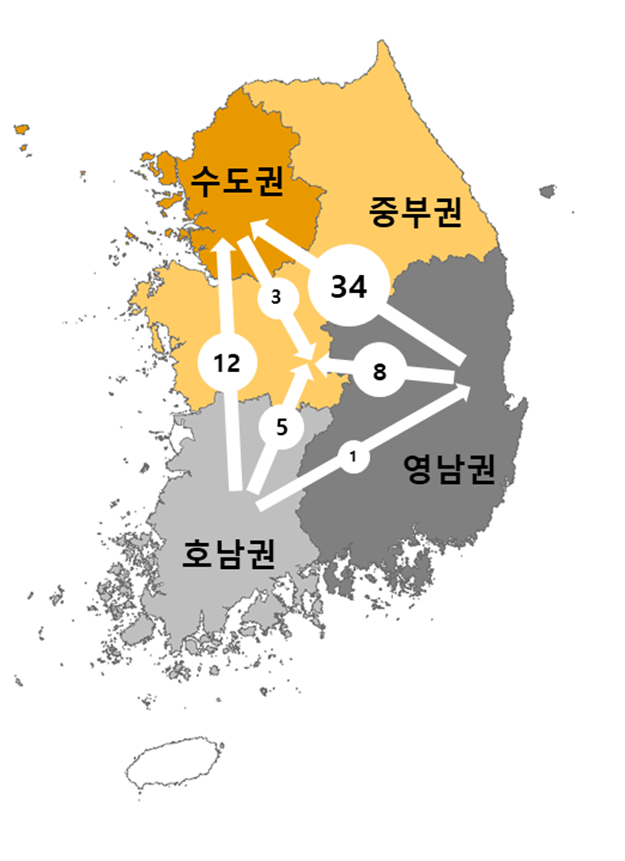
우리나라: NM, NMR, 시도

우리나라: 인구 이동 흐름(전체 인구), 시도

우리나라: 인구 이동 흐름(20-24세), 시도

우리나라: 인구 이동 흐름(65-69세), 시도

우리나라: NMR, 시군구
, 2024.jpg)
우리나라: 연령별 NM, 서울

우리나라: 연령별 NM, 경기